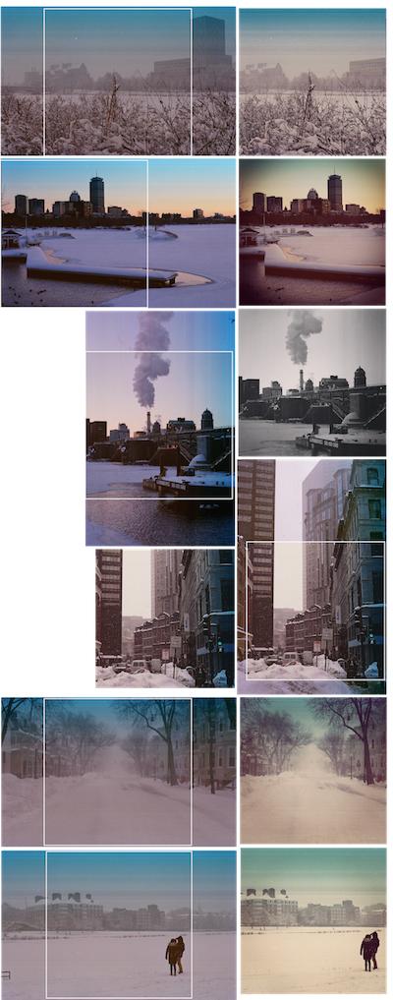

Photography was my first hobby - if you could even call it that. It’s more accurate to say that after learning to walk and talk, I learned to release a camera’s shutter; as if it were a natural step in every human’s development. The first camera I picked up was my dad’s old 35mm Nikon FE. Having grown up on a small farm in the picturesque Hudson Valley of New York, it should be no surprise that photography stuck with me.
When the whole world shifted to digital with the dot com boom, so did my relationship with photography. I picked up a Nikon d70 with a modest collection of lenses and carried it everywhere I went, photo-documenting every inch of my hometown. Photography added a new meaning to travel. I ventured off of the beaten path, explored other cultures, and learned to appreciate the world’s unique characters.
At seventeen, I faced the absurd question at every seventeen-year-old faces: What do I want to be when I grow up? Under the enormity of the decision, I stumbled. I stared that absurd decision in the face and presented myself two options. I could pursue something I was passionate about and become a Nat Geo photographer or — there was the seemingly more practical option to become a mechanical engineer. I was always tinkering with tools in the family farm’s shop and the idea of solving some of the world’s most pressing issues was also pretty sexy. Plus, I could always keep photography as a hobby, right? That, at least, was my reasoning.
What I didn’t predict was that engineering school would consume my life. College squeezed photography out of my routine as it retreated into a dusty corner reserved only for trips out of the country. I had lost creative appreciation for my home city and believed that I would always take my best shots somewhere else. The growing infrequency in which I carried my camera made travel a rare opportunity that I had to take advantage of. I would run around like a mad man, snapping thousands of frames, not wanting to miss a shot.
Around the same time that I was in college, smartphone cameras made the 80/20 of owning a DSLR irrelevant and Instagram also became a thing. It no longer took a great photographer to make a great photograph. Every fourteen-year-old with a smartphone was producing shots that my bulky Nikon and I struggled to stand out against. I took pride in being a half-decent photographer, but when trying to compete with the latest tech, I found myself only ever partially satisfied with my shots. Although it once enhanced the experience of traveling, photography now made my time abroad stressful. In realizing this, I nearly quit, bringing my camera on fewer and fewer trips.
Two months ago, I picked up an old 35mm Nikon off of Craigslist and have since filled just two rolls of film. That’s 72 frames, to be exact. There’s something about the finite nature of shooting film that has reignited my old passion.
Film has reverted my relationship with photography to focus on the process and the experience of crafting a great shot; whether or not that shot actually turns out to be alright is irrelevant. Film doesn’t come with the instant feedback loop that digital provides. I can royally screw up a frame and not learn about it until a month later when I develop the roll. Every frame is deliberate, rather than being a piece of a fifty frame series that increments towards a better result. In providing no option to iterate, the experience of shooting film forces me to be more forgiving. The imperfections in a photo — dust on the lens, over- or under-exposure, or just being out of focus — only adds character.
My return to film has brought photography back into my routine. My first two rolls have included shots from my commute, my neighborhood, and of people I care for. Developing each roll of film also carves off a reflection point in my life: I am able to look back at the roll and remember the moment at which each photo was taken. There are few better ways to appreciate small moments in our daily lives.
I never used Instagram when I shot digital — it felt unjust to bastardize an original shot with a digital filter. With film, I have become more accepting of Instagram, which has changed how I share my photos. Since I have already milked the value of the experience of crafting the shot, the shot itself is just the icing on the cake. Instagram allows me to share my work with my friends while easily correcting some of those charming imperfections.
